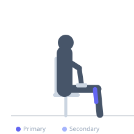
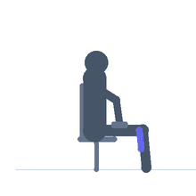

Exercise guide / Seated Calf Raise — Alternating Eccentric
Seated Calf Raise — Alternating Eccentric
A seated calf raise technique that uses both legs for the concentric (rising) phase and one leg for the slow eccentric (lowering) phase, alternating sides each repetition. Rising on two legs reduces the concentric load per limb, while lowering on one leg significantly increases the eccentric stress on the soleus of the working leg. This bilateral-concentric/unilateral-eccentric approach allows the soleus to work at a higher eccentric load than a pure single-leg seated raise, used in Achilles tendinopathy and plantar fasciitis rehabilitation.
Primary muscles
soleus
Secondary muscles
gastrocnemius medial
Equipment
Dumbbell (Fixed)


Starting position
- Sit on a bench with knees at 90 degrees and both feet positioned on the edge of a small block for full range. Rest a dumbbell on each thigh or use a seated calf raise machine.
Setup
- Setup as for a standard seated calf raise. Ensure both feet have a secure footing at the start.
Steps
- Step 1: Press through BOTH feet to rise to the full plantarflexion position.
- Step 2: At the top, lift the right foot off the block, leaving only the left foot to lower.
- Step 3: Lower slowly on the left foot only, controlling the descent over 3-4 seconds to the full stretch position.
- Step 4: Return the right foot to the block. Press through BOTH feet again to rise. At the top, lift the left foot and lower on the right only. Alternate sides each repetition.
Coaching cues
- Use the second foot only for rising — it does not help on the way down
- Think of this as a 'cheat' on the way up and a 'grind' on the way down
- Feel the deep calf (soleus) burning during the slow eccentric
Breathing
- Exhale as you rise (bilateral). Inhale slowly during the eccentric lower (unilateral).
Range of motion
- Full range: both feet to full plantarflexion on the rise; single foot to full dorsiflexion on the eccentric.
Tempo
- 1s bilateral rise, 1s top hold, 3-4s unilateral eccentric lower.
Common mistakes
- Rushing the eccentric — the slow 3-4 second lowering is the most therapeutically valuable component
- Not completing the full stretch at the bottom of the eccentric
- Using the removed foot to assist the lowering phase
Safety
- For insertional Achilles tendinopathy: do not let the heel drop below forefoot level on the eccentric to avoid aggravating the insertion
- For mid-portion tendinopathy: full range eccentric is typically indicated
Training
- strength: 8–15 reps
- strength: 2–3 sets
- Rest: {'strength': 90}